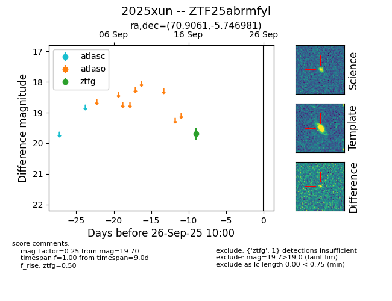

FINK: ZTF25abrmfyl
Lasair: ZTF25abrmfyl
ALeRCE: ZTF25abrmfyl
TNS: 2025xun
YSE: 2025xun
ZTF25abrmfyl (ztf,fink)
2025xun (tns,yse)
equatorial (ra, dec) = (70.9061,-5.74698)
galactic (l, b) = (202.7918,-30.95072)

last ztfg=19.70
1 ztfg detections